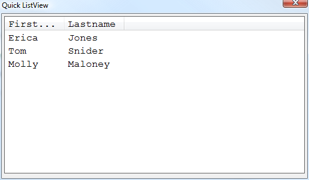

Xdialog Simplified ListView Syntax Fonts
The simplified syntax for the ListView control in Xdialog supports the standard Xdialog {font} command.dim list as c
list = <<%txt%
{data=1}Erica|Jones
{data=2}Tom|Snider
{data=3}Molly|Maloney
%txt%
ui_dlg_box{"Quick ListView",<<%dlg%
{FONT=COURIER NEW,12}
}%M;K%.100,20id^"Firstname|Lastname"list!idchange{;
%dlg%,<<%code%
if a_dlg_button = "idchange" then
a_dlg_button = ""
ui_msg_box{"Note","User clicked on : " + id }
end if
%code%}